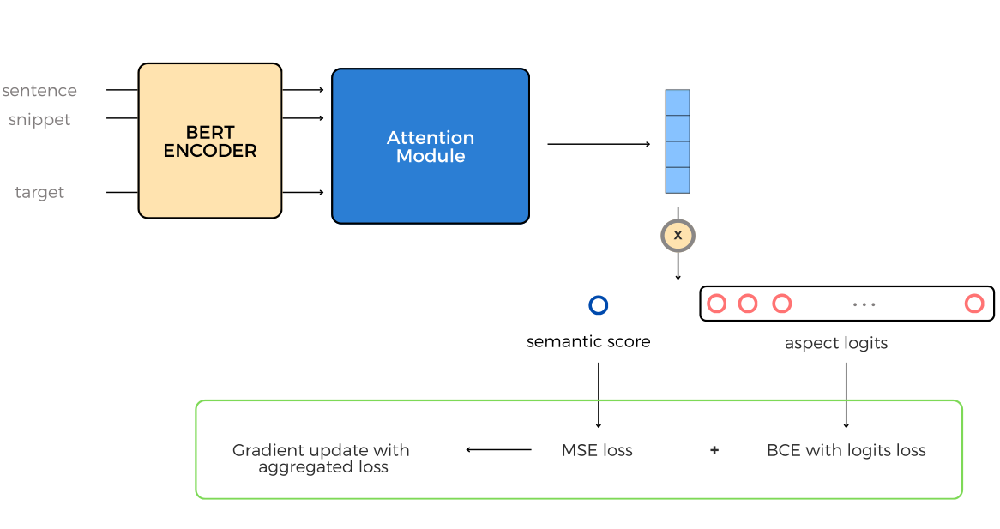

Projects

Beyond Logit Lens: Contextual Embeddings
for Robust Hallucination Detection & Grounding in VLMs
Adobe Research | Summer, 2024

Short-Video Propaganda Detection with LLM-as-Judge
UIUC | Summer, 2023

FIQA-Challenges: Aspect based sentiment analysis
Barclays Case Study Competition | Nov'24

Full Fork in Linux Kernel
IIT Kanpur | Prof. Debadatta Mishra

Sankalak-Python Compiler
IIT Kanpur | Prof. Swarnendu Biswas
Poverty Estimation in Haryana
CDIS | ICG | Aug'23-Apr'24
GemOS: Operating System Functionalities
IIT Kanpur | Prof. Debadatta Mishra
Medical AI Assistant
Noora Health | ICG | Dec'23-May'24

Unified Portal for Hostel-Automation
IIT Kanpur | Prof. Indranil Saha | Jan'23-Apr'23